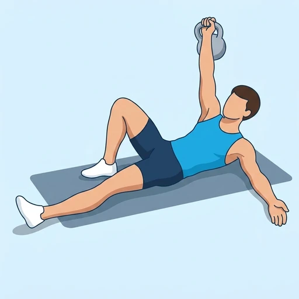
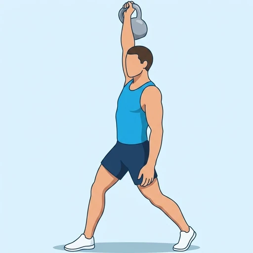
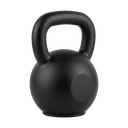

Kettlebell Turkish Get Ups
A full-body kettlebell exercise that moves from lying to standing while holding the weight locked out overhead, training total-body strength, stability, and mobility.
Full body · Kettlebell · Intermediate


Muscles worked by the Kettlebell Turkish Get Ups
Primary
Secondary
Also called: front deltoid, anterior delt, front delt, anterior deltoid, glute, glutes.
Equipment

KettlebellAlso called: kb, cast iron kettlebell, competition kettlebell, girya.
How to do the Kettlebell Turkish Get Ups
- Lie on your back holding a kettlebell pressed overhead in one hand.
- Bend the knee on the same side and plant the foot flat.
- Roll up onto your opposite elbow, then to your hand.
- Drive your hips up and sweep your straight leg back into a lunge.
- Stand up fully while keeping the kettlebell locked out overhead.
- Reverse the sequence to return to the start.
Form tips
- Keep your eyes on the kettlebell until you are standing, then look forward.
- Move slowly through each step — the get-up is a sequence, not one motion.
At a glance
| Body part | Full body |
|---|---|
| Category | Strength |
| Force type | Push |
| Mechanic | Compound |
| Difficulty | Intermediate |
| Equipment | Kettlebell |
| Goals | Hypertrophy, Strength |
| Tags | Lower back safe, Shoulder safe, No axial load, Knee safe |
| MET | 6.0 (metabolic equivalent, for calorie estimates) |
| Unilateral | No |
| Bodyweight | No |
| Dataset id | kettlebell-turkish-get-ups |
Kettlebell Turkish Get Ups in German & Spanish
| German | Türkisch Aufstehen mit Kettlebell |
|---|---|
| Spanish | Levantamiento Turco con Kettlebell |
Descriptions, instructions and tips ship in all three languages in the JSON.
Related exercises
Exercise data (JSON)
The record below is exactly what exercises.json ships for this exercise — names, descriptions, instructions and tips in English, German and Spanish.
{
"id": "kettlebell-turkish-get-ups",
"name_en": "Kettlebell Turkish Get Ups",
"name_de": "Türkisch Aufstehen mit Kettlebell",
"name_es": "Levantamiento Turco con Kettlebell",
"description_en": "A full-body kettlebell exercise that moves from lying to standing while holding the weight locked out overhead, training total-body strength, stability, and mobility.",
"description_de": "Eine Ganzkörperübung mit der Kettlebell, bei der man vom Liegen zum Stehen wechselt und das Gewicht über dem Kopf gestreckt hält; sie trainiert Kraft, Stabilität und Beweglichkeit des ganzen Körpers.",
"description_es": "Un ejercicio de cuerpo completo con kettlebell que pasa de estar tumbado a de pie mientras se mantiene el peso bloqueado por encima de la cabeza, trabajando la fuerza, la estabilidad y la movilidad de todo el cuerpo.",
"category": "strength",
"force_type": "push",
"mechanic": "compound",
"difficulty": "intermediate",
"equipment": "kettlebell",
"body_part": "full_body",
"primary_muscles": [
"anterior_deltoid",
"gluteus_maximus",
"rectus_abdominis"
],
"secondary_muscles": [
"obliques",
"quadriceps",
"triceps_brachii"
],
"goals": [
"hypertrophy",
"strength"
],
"tags": [
"lower_back_safe",
"shoulder_safe",
"no_axial_load",
"knee_safe"
],
"variation_group": "turkish-get-up",
"is_unilateral": false,
"is_bodyweight": false,
"instructions_en": [
"Lie on your back holding a kettlebell pressed overhead in one hand.",
"Bend the knee on the same side and plant the foot flat.",
"Roll up onto your opposite elbow, then to your hand.",
"Drive your hips up and sweep your straight leg back into a lunge.",
"Stand up fully while keeping the kettlebell locked out overhead.",
"Reverse the sequence to return to the start."
],
"instructions_de": [
"Lege dich auf den Rücken und halte eine Kettlebell mit einer Hand über dem Kopf gestreckt.",
"Beuge das Knie auf derselben Seite und stelle den Fuß flach auf.",
"Rolle dich auf den gegenüberliegenden Ellenbogen und dann auf die Hand.",
"Drücke die Hüfte nach oben und führe das gestreckte Bein nach hinten in einen Ausfallschritt.",
"Stehe vollständig auf und halte die Kettlebell über dem Kopf gestreckt.",
"Kehre die Abfolge um, um zur Ausgangsposition zurückzukehren."
],
"instructions_es": [
"Túmbate boca arriba sosteniendo una kettlebell por encima de la cabeza con una mano.",
"Flexiona la rodilla del mismo lado y apoya el pie plano.",
"Rueda hasta apoyarte en el codo opuesto y luego en la mano.",
"Empuja las caderas hacia arriba y lleva la pierna estirada hacia atrás a una zancada.",
"Ponte de pie por completo manteniendo la kettlebell bloqueada por encima de la cabeza.",
"Invierte la secuencia para volver a la posición inicial."
],
"tips_en": [
"Keep your eyes on the kettlebell until you are standing, then look forward.",
"Move slowly through each step — the get-up is a sequence, not one motion."
],
"tips_de": [
"Behalte die Kettlebell im Blick, bis du stehst, dann schaue nach vorn.",
"Bewege dich langsam durch jeden Schritt — das Aufstehen ist eine Abfolge, keine einzelne Bewegung."
],
"tips_es": [
"Mantén la vista en la kettlebell hasta que estés de pie, luego mira al frente.",
"Muévete despacio en cada paso: el levantamiento es una secuencia, no un solo movimiento."
],
"met": 6.0,
"images": {
"flat": {
"start": "images/flat/kettlebell-turkish-get-ups-start.webp",
"peak": "images/flat/kettlebell-turkish-get-ups-peak.webp"
}
}
}Fetch just this exercise
const { exercises } = await fetch(
"https://exercise-dataset.com/exercises.json"
).then(r => r.json());
const ex = exercises.find(e => e.id === "kettlebell-turkish-get-ups");Free for personal and commercial in-app use with attribution (“Exercise data by RepDB”) — see the license and ready-made attribution snippets. Redistributing the data as a dataset or API is not permitted.